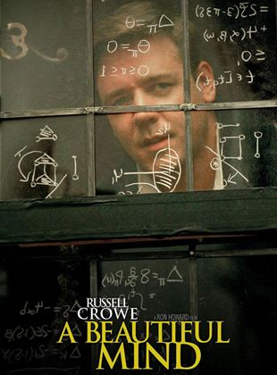

Rabia Yel
Hakkımda
Merhaba ben Rabia Yel. Kayseri'de yaşıyorum. Web geliştirme ile ilgileniyorum.
İlgi Alanlarım
- Film
- Dizi
- Kitap
- Şu Çılgın Türkler
Yazar: Turgut Özakman
Satın Al!
- Gurbet Kuşları
Yazar: Orhan Kemal
Satın Al!
- Kiralık Konak
Yazar: Yakup Kadri Karaosmanoğlu
Satın Al!
Sevdiğim Film
Akıl Oyunları (A Beautiful Mind)
